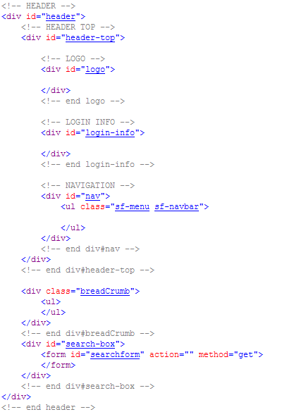
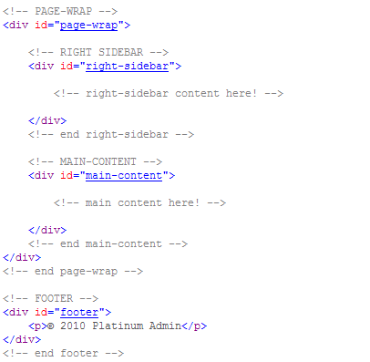
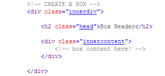
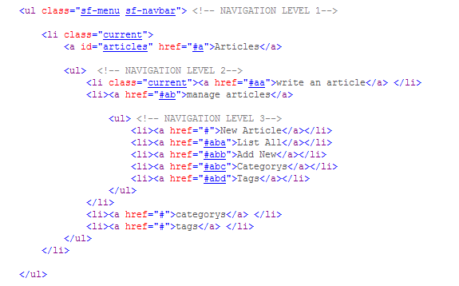
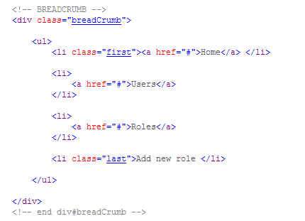

“Platinum Admin” Documentation by “Ahmet Sali” v1.0
“Platinum Admin”
Thank you for purchasing my theme. If
you have any questions that are beyond the scope of this help file,
please feel free to email via my user page contact form
here. Thanks so
much!
Table of Contents
- HTML Structure
- CSS Files and Structure
- JavaScript
- Sources and Credits
A) HTML Structure - top
This theme is a fluid layout with two columns.
<div id="main-content"> is the fluid main content on the left.
<div
id="right-sidebar"> is the static-width sidebar content on the right.
Header Html Structure

Main Content Html Structure

Content Boxes
The content boxes consist of a div with a class
.innerdiv at the top, and inside
h2 with class
.head or
.head-alt or
.head-alt-white following div with a class
.innercontent.

Navigation
This theme uses Superfish jquery plugin for menu, supports three level navigation.
All the menu styles are in the css/superfish.css file, execpt the first level menu items styled
over id for background icon, this styles can be found in css/main.css at navigation section.

To indicate the current page in the menu, add .current class to menu items
( li's ).
BREADCRUMB
Here is the markup for breadcrumb:

B) CSS Files and Structure -
top
- css/main.css
- css/superfish.css
I'm using two CSS files in this theme. The first one is superfish.css for styling menu.
The second file main.css contains all of the specific stylings for the page. The file
is separated into sections using:
/* === Reset === */
you shouldn't change this styles!
/* === GENERAL STYLE === */
some code
/* === HEADINGS === */
some code
/* === LAYOUT === */
some code
/* === HEADER === */
some code
etc, etc.
Changing Color
If you want to change the color of the theme just add related color-name.css file.
like, css/colors/green.css
If you would like to edit a specific section of the site, simply find the
appropriate label in the CSS file, and then scroll down until you find the appropriate
style that needs to be edited.
Button Styles
3 different size;
- normal: (no additional class required, by default a button is in normal size)
- big : add .big class.
- bigger : add .bigger class.
6 different color;
- .blue
- .red
- .green
- .pink
- .dark-blue
- .dark-green
- .gray
Example:
<a
class="button green big">big
button!</a>
Inline Notification Messages
Create inline notification messages as belove;
<div
class="notification successfull">message here
</div>
<div
class="notification errors">message here
</div>
<div
class="notification info closable">message here
</div>
CSS Helper Classes
Some of the helper css classes;
- .hidden : hides the elements.
- .half : 50% width.
- .trio : 1/3 width.
- .quad : 1/4 width.
- .full : full width.
- .alignleft
- .alignright
- .aligncenter
- .floatleft
- .floatright
- .clear
C) JavaScript - top
This theme imports these Javascript files;
- jQuery
- js/jquery-1.4.2.min.js
- jQuery Javascript framework
- jquery.com
- Superfish
- js/jquery.hoverIntent.minified.js
- js/superfish.js
- jQuery plugin for multi level navigation, for more information
visit project page.
- jQuery Tools (for tabs)
- js/jquery.tools.min.js
- For more information on creating tabs
visit project page.
- Markup and implementation is as same as the link above.
- jQuery Simple Modal
- jQuery NotifyBar
- js/jquery.notifyBar.js
- Three javascript functions for informing user;
- showSuccess(msg)
- showError(msg)
- showCustomMessage(msg)
- msg : is a parameter for the message which will display.
- For more information on using NotifyBar
visit project page.
- jQuery Tipsy (Tooltip)
- js/jquery.tipsy.js
- This plugin shows the link's ( a tag) 'title' attirubute as a tooltip. To enable add
.tooltip-enabled class to the container element of links you want enable tooltip.
- For more information
visit project page.
- jQuery Visualize
- jQuery Collapsible
- js/jQuery.collapsible.js
- Add .collapsible class to any element that you want it to be collapsible.The content
after this element will be collabsiple.
- For more information
visit project page.
- Closable
-
To add closable function just add .closable class to any container element you wish.
- jQuery AutoSuggest
- Custom Scripts (plugin setups)
- js/platinum-admin.js
- All the plugins above have been setup in this javascript file. Check out this file
for plugin usages with comments.
- Login Script (plugin setups)
- js/platinum-admin-login.js
- This file is only used in login page.
E) Sources and Credits - top
I've used the following images, icons or other files as listed.
Once again, thank you so much for purchasing this theme. As I said at the
beginning, I'd be glad to help you if you have any questions relating to this
theme. No guarantees, but I'll do my best to assist. If you have a more general
question relating to the themes on ThemeForest, you might consider visiting
the forums and asking your question in the "Item Discussion" section.
Ahmet Sali
Go To Table of Contents